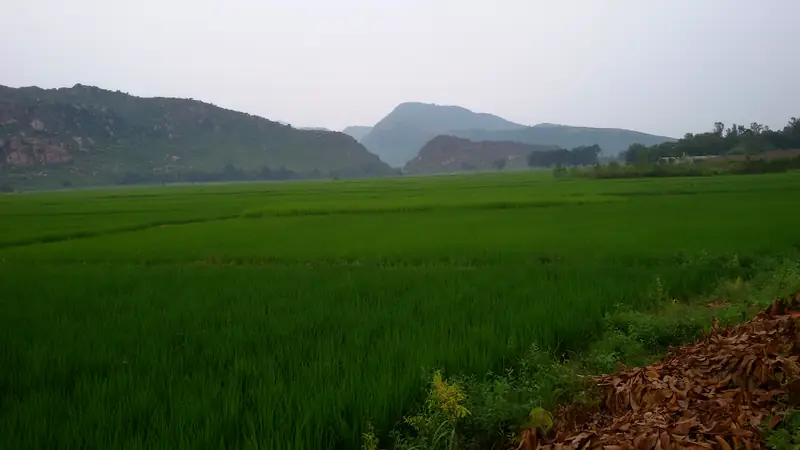
Paddy fields below the hills, GobindapurPhoto by Deepak das, CC BY 3.0, via Wikimedia Commons. Colour and contrast adjusted, resized and cropped.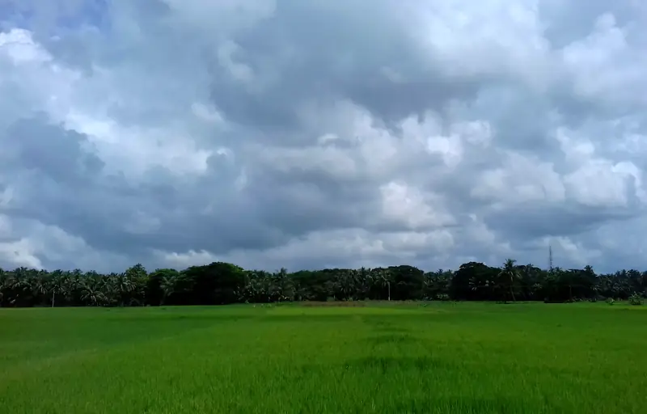
Paddy field under monsoon cloudsPhoto by Chinmayee Mishra, CC BY-SA 4.0, via Wikimedia Commons. Colour and contrast adjusted, resized and cropped.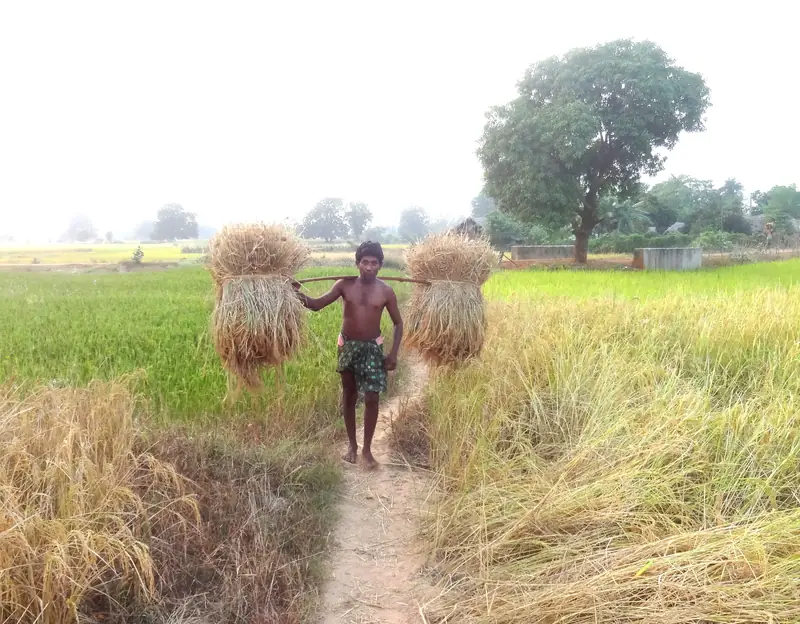
Rice farmer near Anantapalli villagePhoto by Aditya Mahar, CC BY-SA 4.0, via Wikimedia Commons. Colour and contrast adjusted, resized and cropped.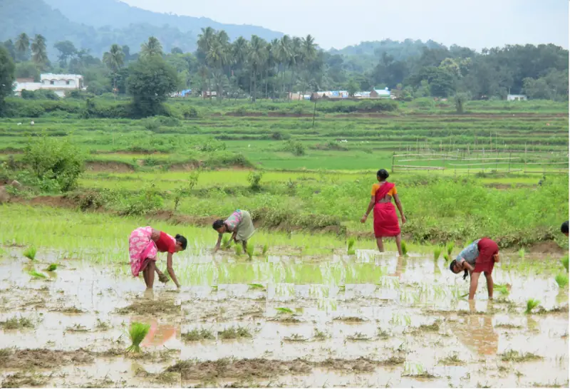
Transplanting paddy near a villagePhoto by Santosh.mbahrm, CC BY-SA 3.0, via Wikimedia Commons. Colour and contrast adjusted, resized and cropped.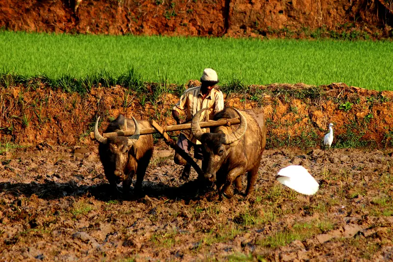
Ploughing with water buffaloes, KoraputPhoto by Shiv's fotografia, CC BY-SA 4.0, via Wikimedia Commons. Colour and contrast adjusted, resized and cropped.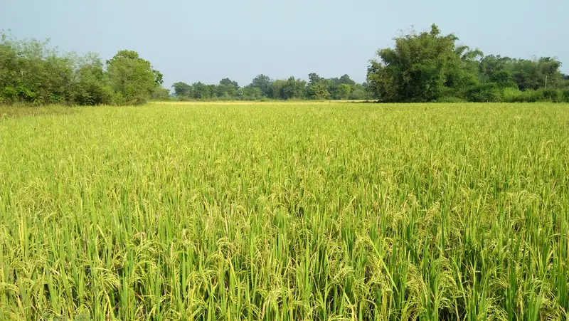
Ripening paddyPhoto by Fagu Baskey, CC BY-SA 4.0, via Wikimedia Commons. Colour and contrast adjusted, resized and cropped.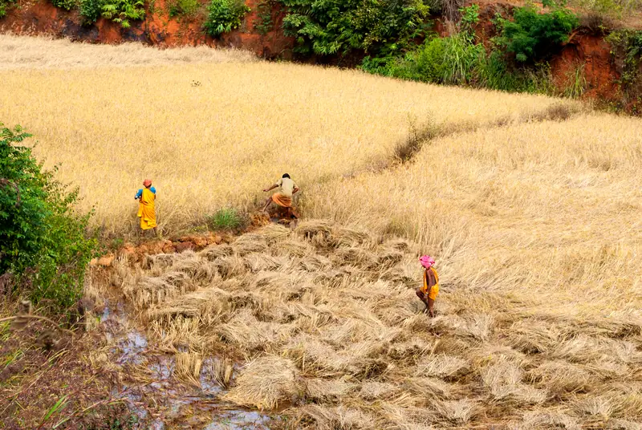
Harvesting paddyPhoto by Drashokk, CC BY-SA 4.0, via Wikimedia Commons. Colour and contrast adjusted, resized and cropped.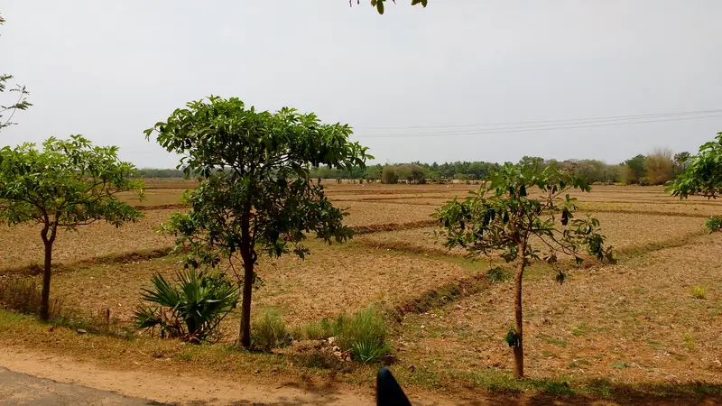
Fields and bunds after harvest, AstakPhoto by Deepak das, CC BY 3.0, via Wikimedia Commons. Colour and contrast adjusted, resized and cropped.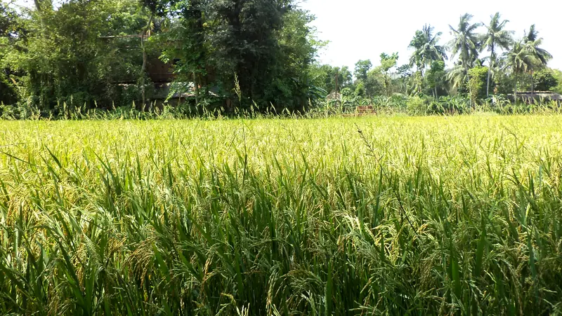
Rice field in BalasorePhoto by Jnanaranjan sahu, CC BY-SA 4.0, via Wikimedia Commons. Colour and contrast adjusted, resized and cropped.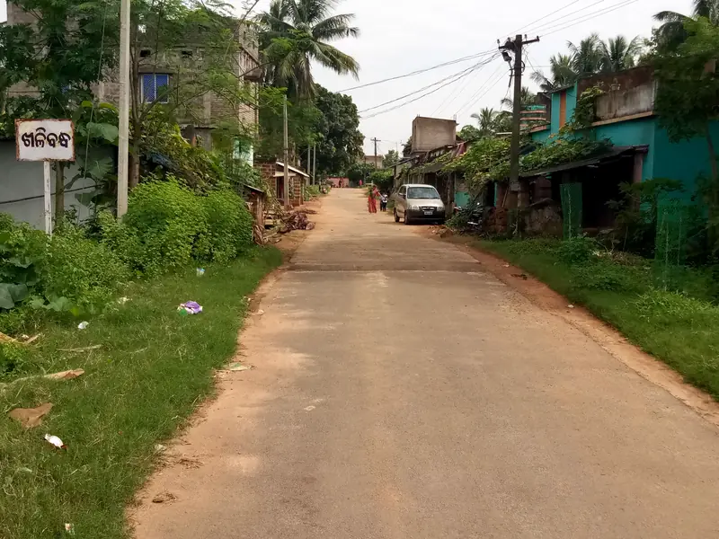
Khalibandha villagePhoto by Strange Burg, CC BY-SA 4.0, via Wikimedia Commons. Colour and contrast adjusted, resized and cropped.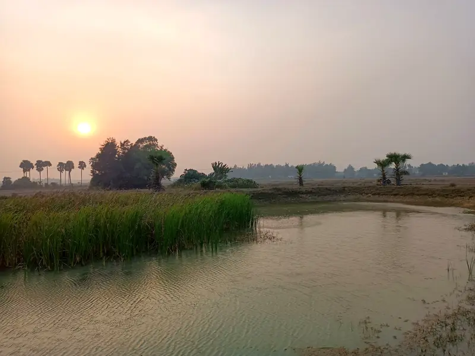
Sunset at Raiberuan village, PuriPhoto by Bhagabata Sethy, CC BY-SA 4.0, via Wikimedia Commons. Colour and contrast adjusted, resized and cropped.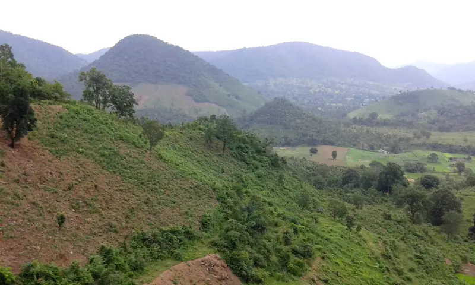
Hills of KoraputPhoto by Kkmishra1960, CC BY-SA 4.0, via Wikimedia Commons. Colour and contrast adjusted, resized and cropped.
Images adapted from CC BY-SA originals, including the blog thumbnails built on them, are shared under the same licence. App screenshots and illustrations are © Bhumitra.